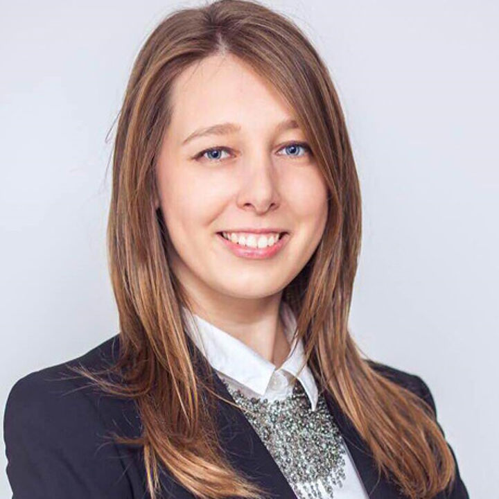
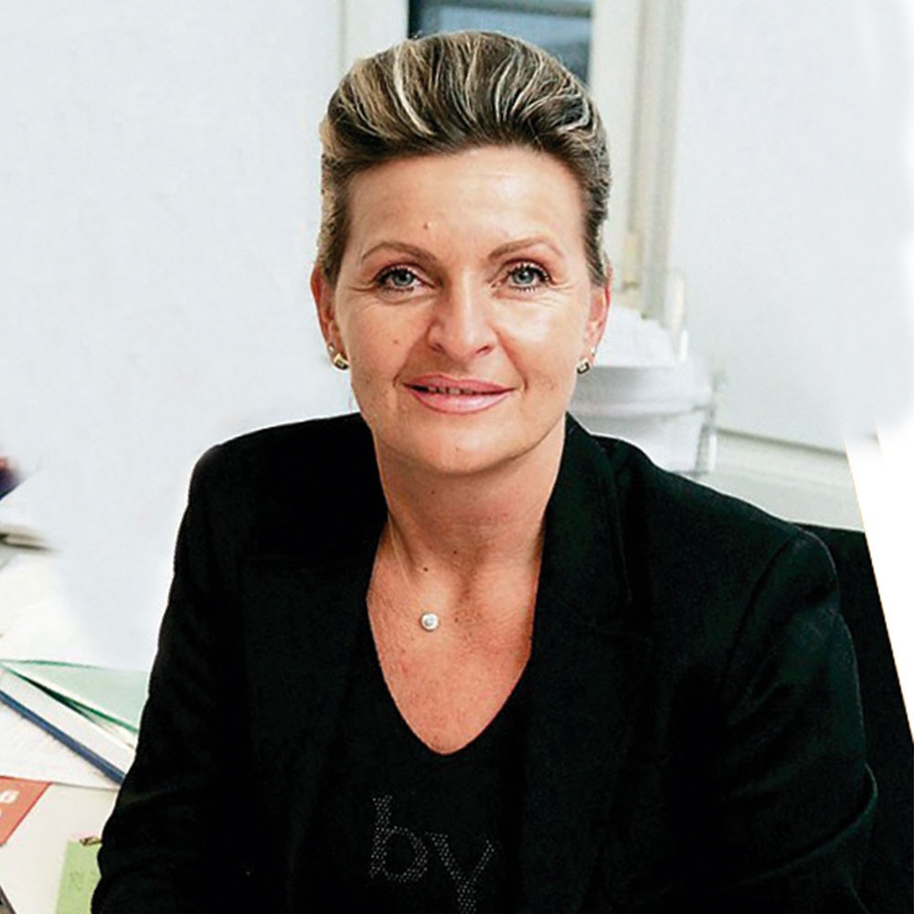

Als Martina Krüger und ich im Februar 2013 nach Kiew reisten, lag bereits ein langer gemeinsamer Weg hinter uns. Das Austauschprogramm für ukrainische Ärzte und Kinderkrankenschwestern war angelaufen, wir wollten uns vor Ort ein Bild vom Stand des Projekts machen und unsere Partner wiedersehen.
Organisiert wurde unser Besuch von der Stiftung der Klitschko-Brüder. Empfangen wurden wir von Alina Nosenko und ihrem jungen Team. Schon nach wenigen Stunden hatte ich das Gefühl, nicht von Funktionären begleitet zu werden, sondern von Menschen, die ihr Land liebten und fest entschlossen waren, etwas zu verändern.

Sie zeigten uns ihre Stadt. Wir gingen über den Maidan, lange bevor dieser Platz weltweite Bekanntheit erlangen sollte. Damals war er einfach das lebendige Zentrum Kiews. Von dort führte unser Weg durch das Goldene Tor bis hinauf zum Michaelskloster. Es war die Zeit vor dem Osterfest. Überall waren Menschen unterwegs. Familien, ältere Ehepaare und erstaunlich viele junge Leute strömten in die Kirchen. Das überraschte mich.
Ich hatte erwartet, vor allem ältere Menschen anzutreffen. Stattdessen kamen auch Studenten und junge Familien, entzündeten eine Kerze, verharrten einige Minuten im Gebet und gingen anschließend wieder hinaus. Religion gehörte für viele ganz selbstverständlich zum Alltag.
Den Besuch im Michaelskloster werde ich nie vergessen. Schon beim Betreten umfing uns eine ganz besondere Atmosphäre. Die Kirche war nur spärlich beleuchtet. Das Gold der Ikonen schimmerte im Halbdunkel, überall flackerten Kerzen. Von oben und aus dem Hintergrund erklangen die tiefen Harmoniegesänge der Mönche. Ich weiß nicht mehr genau, was sie sangen. Rückblickend könnte es entweder die St. Johannes Chrysostomos Liturgie von Tschaikowski oder Rachmaninoff gewesen sein. Derweil kamen und gingen die Besucher. Niemand sprach laut. Jeder schien ganz bei sich zu sein.

Martina und ich standen lange schweigend nebeneinander. Wir lauschten andächtig den Gesängen und betrachteten das Schauspiel um uns herum. Manchmal gibt es Augenblicke, die man kaum beschreiben kann. Dieser gehörte dazu. Für einen Moment rückten Krankenhaus, Projekte und Medizin völlig in den Hintergrund. Es blieb nur dieser Raum, die Gesänge und eine Stimmung, die uns beide tief berührte.
Auf dem Rückweg dachte ich daran, wie unterschiedlich meine Eindrücke von der Ukraine waren. Da waren die engagierten Ärzte, die jungen Mitarbeiter der Stiftungen, Alina und ihr Team, die mit großer Begeisterung ihr Land voranbringen wollten. Gleichzeitig hatte ich bei anderen Gelegenheiten erlebt, wie schwerfällig viele Strukturen waren und wie oft gute Ideen an ihnen scheiterten.
Gerade deshalb ist mir Kiew so in Erinnerung geblieben. Nicht wegen der Politik. Nicht wegen der offiziellen Termine. Sondern wegen der Menschen, ihrer Herzlichkeit und dieses besonderen Nachmittags im Michaelskloster.
Wenn ich heute an Kiew denke, höre ich zuerst wieder die Gesänge der Mönche.